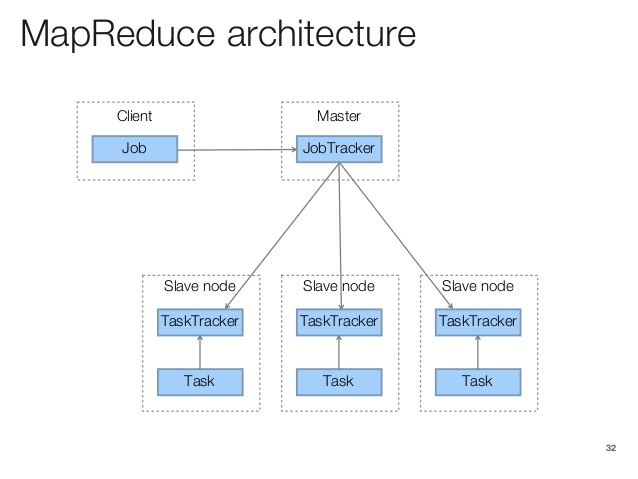

50.043 Map Reduce
Learning Outcomes
By the end of this lesson, you are able to
- Differentiate Parallelism and Concurrency
- Differentiate Data Parallelism and Task Parallelism
- Explain map and reduce
- Explain Hadoop MapReduce
Recall
HDFS addresses the big data issues by
- distributing the data into multiple data nodes.
- storing meta data on the name node.
- allowing only sequential read and append.
Based on the design decision made during the design of Google File system, data query via join and B-tree based indexing was not the top-most wanted use case.
On the other hand, most of the data processing is to scan through the needed data files and perform transformation or aggregation (page rank algorithm).
To shorten the processing time, we could leverage on the processors found in the data nodes. This leads us to parallel computing.
Parallel Computing
A parallel program is one that uses a multiplicity of computational hardware (e.g., several processor cores or several server nodes) to perform a computation more quickly. The aim is to arrive at the answer earlier, by delegating different parts of the computation to different processors that execute at the same time.
We are often confused parallelism with concurrency. By contrast, concurrency is a program-structuring technique in which there are multiple threads of control. Conceptually, the threads of control execute "at the same time"; that is, the user sees their effects interleaved. Whether they actually execute at the same time or not is an implementation detail; a concurrent program can execute on a single processor through interleaved execution or on multiple physical processors.
We summarize the difference between parallelism and and concurrency in the following table.
| Parallelism | Concurrency | |
|---|---|---|
| Area of Focus | Efficiency | Structural and Modularity |
| Number of Goals | One | One or more |
| Program Semantic | Deterministic | Non-deterministic |
| Single processor Exec | Sequential | Interleaving |
We focus on the key differences. Though concurrency also achieve certain level of speed up, its focus is in handling multiple tasks with a fixed set of resources through scheudling. Parallelism focuses on getting one thing done and fast. The result of parallel computing must be deterministic whilst concurrency does not necessarily entail determinism.
The following are some examples of parallelism
- A sodoku solver uses multiple CPU cores
- A parallelized database query that retrieves and aggregates records from a cluster of replica of database.
- A K-means analyses running over a Hadoop cluster
and concurrency
- A web application that handles multiple clients HTTP requests and interacting with the databases.
- A User Interface of the a mobile phone handles user's touch screen input and exchanging data via the 4G network
Means of Parallelism
Parallelism can be achieved via special hardware or/and via software
Hardware Parallelism
Single Processor
Parallelism can be actualized via a single processor when the given instructions use less than provided bits, e.g. we can parallelize the execution of some 32 bit operations given that the processor operates on 64 bit addresses.
Alterantively, the parallelism can be achieved by instruction pipelining, assume different sub components of the processor handles different types of process operators. For instance,
1: add r1 r2 r3 // r1 = r2 + r3
2: mul r1 2 // r2 *= 2
3: add r2 r4 r5 // r2 = r4 + r5
assuming add and mul instructions are executed by different components of the same processor, after the instruction 1 is executed, instructions 2 and 3 can be executed in parallel.
GPU
GPU can be leveraged to perform matrix operations in parallel by making use of the multiple cores builtin. The acceleration of computation often requires firwmware level and driver level support, e.g. Nvidia CUDA and AMD ROCM.
Multiple processors with shared memory
Modern personal computers and mobile devices are equipped with multi-core processors. These processors share the same pool of physical memory. Parallelism can be achieved via data parallelism, task parallelism, multi-threading and etc.
Multiple processors with distributed memory
As the number of processors increases. the processing power per dollar for mutliple processor with shared memory is diminishing. Large scale systems are often built over multiple processors (multiple servers) with distributed memory. Each processor (set of processors) has its own dedicated memory. They are connected and communicating through high speed networks.
Software Parallelism
In the earlier year of study, we came acrossing the concept of multithreading. In this module, we focus the other two commonly used (higher level) software parallelism, task parallelism and data paralleism.
Task Parallelism
In Task parallelism, if some sub-computations (sub tasks) are mutually independent, (which can be identified via human checking or software analysis), they can be executed in parallel. For instance,
def cook_beef_bolognese(beef,spaghetti):
sauce = cook_sauce(beef) # task A
pasta = cook_pasta(spaghetti) # task B
return mix(sauce,pasta)
If we identify that sub task of cooking sauce is independent of the sub task of cooking pasta, we can execute the two sub tasks in parallel when the hardware resource is available.
Note that in Task parallelism, the sub tasks are not necessary having the same set of instructions.
Data Parallelism
In data parallelism, we compute the result by running a common routine repeatedly over a set of input data. If there is no dependency among the iteration, we could parallize these computations too.
For example,
def fib(n): ...
def main():
inputs = [ 10, 100, 200, ...]
results = []
for i in inputs:
results.append(fib(i))
return results
in the above code snippet, we repeatedly compute the fibonacci numbers given the index positions as the input. Note that these computations are independent. We could rewrite the above using the python `map`` function.
def fib(n): ...
def main():
inputs = [ 10, 100, 200, ...]
# task C
results = map(fib, inputs)
return results
def map(f,l):
if len(l) == 0:
return []
else:
hd = l[0]
tl = l[1:]
fst = f(hd)
rest = map(f,tl)
return [fst] + rest
The above variant is the computing the same results as the original version, except that we are using the map function instead of the for loop. The map function applies a higher order function f to a list of items l. In case l is an empty list, it returns an empty list. otherwise, it applies f to the first item in l and recursively calls itself to handle the rest of the elements. (Note: since Python 3, the map is implemented in iterator style. However, we still use the above version for the ease of reasoning.) One motivation to use map instead of for-loop is to explicitly show that
- each call to
f(hd)for each item inlis using the same instruction - each call to
f(hd)for each item inlis indpendent (c.f. task parallelism)
Exploiting these results, the compiler could parallelize these calls, e.g. by scheduling fib(10) in CPU core 1, fib(100) in CPU core 2, and etc.
Unfortunately, Python does not have data parallelism builtin for map. In some other languages such as Scala, the map function has builtin support of data parallelism. We will see some of the demo during the lecture when time permits.
Data Parallelism and determinism
Defintion: Determinisism
We say a programm \(P\) is deterministic iff for all input \(i_1\) and \(i_2\) such that \(i_1 \equiv i_2\) then \(P(i_1) \equiv P(i_2)\).
In the presence of parallelism and concurrency, it is tricky to ensure a program is determinsitic.
Fortunately, for map data parallelism, all we need is a side condition to ensure deterministic semantics.
Pure function
Recall from some earlier module, we learned that a function f is pure if it does not modify nor is dependent on the external state when it is executed.
map(f,l) is guaranteed to be deterministic (regardless whether it is executed sequentially or in parallel.)
Data Parallelism with Reduce
Orthogonal to map, function reduce(f, l, initial) aggregates all the items in l with a binary operation f, using initial as the initial aggregated value.
def reduce(f,l,acc):
if len(l) == 0:
return acc
else:
hd = l[0]
tl = l[1:]
return reduce(f, tl, f(hd,acc))
def reduce(f,l):
return reduce(f,l[1:], l[0])
For example,
def main():
inputs = [10, 100, 200, 400]
result = reduce(lambda x,y:x+y,inputs,0)
return result
computes the sum of all numbers found in inputs, i.e. it is effectively computing
(0 + 10 + 100 + 200 + 400)
If we are given 2 CPU cores, we could evaluate (0 + 10 + 100) in Core 1, (200 + 400) in Core 2, then (110 + 600) in Core 1.
Reduce and determinism
Given that a binary function f is pure, commutative and associative it is guaranteed that reduce(f,l,a) can be parallelized. The results will be the same as it is executed sequentially.
Note: A binary function f is commutative iff f(x,y) = f(y,x). A binary function f is associative iff f(x,f(y,z)) = f(f(x,y),z).
MapReduce Framework
Though this looks prosing on paper,
- In practice, it won't scale well with each map or reduce task being teeny tiny.
- It is better to partition data into chunks so that each map or reduce task is reasonably large enough.
This leads to the MapReduce Framework found in Google FS, Hadoop and many other big data platforms.
The Toy MapReduce Framework
For the ease of understanding, we consider a scaled down and simplified implementation of the MapReduce Framework in Python. Though there is no parallelism builtin, we know that when the same library can be easily ported to other languguages or environments with parallel map and reduce support.
Besides map and reduce we need a few more combinators (functions)
def flatMap(f,l):
ll = map(f,l)
return reduce(lambda x,y:x+y, ll, [])
flatMap is similar to map, except that each inner list is flattened. e.g. flatMap(lambda x: [x+1], [1,2,3]) yields [2,3,4].
def lift_if(p,x):
if p(x):
return [x]
else:
return []
def filter(p,l):
return flatMap(lambda x:lift_if(p,x), l)
filter returns a new list whose elements are from l and satisfying the test p. e.g.
filter(lambda x:x%2==0, [1,2,3,4,5,6]) yields [2,4,6].
def merge(kvls1, kvls2):
if len(kvls1) == 0: return kvls2
elif len(kvls2) == 0: return kvls1
else:
((k1,vl1), tl1) = (kvls1[0], kvls1[1:])
((k2,vl2), tl2) = (kvls2[0], kvls2[1:])
if k1 == k2: return [(k1,vl1+vl2)]+merge(tl1,tl2)
elif k1 < k2: return [(k1,vl1)]+merge(tl1,kvls2)
else: return [(k2,vl2)]+merge(kvls1, tl2)
def shuffle(kvs):
kvls = map(lambda kv: [(kv[0], [kv[1]])], kvs)
return reduce(merge, kvls, [])
We assume that there exists a total order among keys.
Given a list of key-value pairs, shuffle shuffles and merge values sharing the same key.
e.g. shuffle([("k1",1),("k2",1), ("k1",2), ("k2",3)]) yields
[('k1', [1, 2]), ('k2', [1, 3])]
def reduceByKey(f, kvs, acc):
s = shuffle(kvs)
return map(lambda p: (p[0], reduce(f,p[1],acc)), s)
def reduceByKey(f, kvs):
s = shuffle(kvs)
return map(lambda p: (p[0], reduce(f,p[1])), s)
reduceByKey shuffles the list of key-value pairs, grouping them by keys, then applies the binary aggregation function f to values in
each group. e.g. reduceByKey(lambda x,y:x+y, [("k1",1),("k2",1), ("k1",2), ("k2",3)],0) yields [('k1', 3), ('k2', 4)]
Note that all these combinators are implemented using map and reduce. If map and reduce are parallelized, so are these combinators.
Apart from reduceByKey, we would also like to include a variant
def reduceByKey2(agg, kvs):
return map(agg, shuffle(kvs))
Both variants call shuffle to partition the input.
The difference is that given a partition (key,values) obtained from the shuffled results, the function agg in reducedByKey2 is applied to aggregate values, and returns key of the partition and the aggregated result. Note that agg is given by the user/programmer, which might not be implemented using reduce, in contrast, the f in reduceByKey is applied to the reduce(f,values).
Example : Word Count
In this example, we would to write a program which opens a text file, reads all the words in the file and counts the number of occurences of words.
Using for loop
infile = open(sys.argv[1], 'r')
dict = {}
for line in infile:
words = line.strip().split()
for word in words:
if (dict.has_key(word)):
dict[word] +=1
else:
dict[word] = 1
for word,count in dict.items():
print("%s,%d\n" % (word,count))
Using Toy MapReduce
infile = open(sys.argv[1], 'r')
lines = []
for line in infile: lines.append(line.strip())
def f(text):
wordand1s = []
for word in text.split(): wordand1s.append((word,1))
return wordand1s
def g(p):
word,icounts = p
return (word, sum(icounts))
w1s = flatMap(f,lines)
res = reduceByKey2(g, w1s)
for word,count in res: print("%s,%d" % (word,count))
we abstract away the use of for loop and the dictionary by using flatMap and reduceByKey2.
Using MapReduce in Hadoop
We consider using the Python API of Hadoop (a.k.a. pydoop). Hadoop MapReduce provides the standard parallelized/distributed implementtation of the flatMap and reduceByKey2, we don't need to worry implement them.
def mapper(key, text, writer):
for word in text.split():
writer.emit(word, "1")
def reducer(word, icounts, writer):
writer.emit(word, sum(map(int, icounts)))
the function mapper is taking the role of f in the toy mapreduce version, and function reducer is taking the role of g.
We can think of writer.emit is similar to the regular return and yield in Python's iterator
depending on the context.
Note that mapper also takes a key as input. Hadoop generalize to all
data that potentially has a key for each entry. In case like the input
ot the mapper is a plain text file, the key is the byte offset
w.r.t to the start of the text file.
Since we are using Pydoop, the integration with with the Hadoop MapReduce is just to run it as a script.
$ pydoop script wordcount.py /input /output
Note that we do not need to call flatMap or reduceByKey2 explicitly.
In the following chart illustrate of the steps taken place during wordcount example.

Hadoop MapReduce Architecture
The following diagram show a basic structure of all the server and clients component of the Hadoop MapReduce.

In Hadoop v1, a JobTracker is spawned for coordination purpose; TaskTrackers are spawedfor executing the actual jobs. We can think of the JobTrackers are run in the name node, and the Tasktrackers are processes in the data nodes.
We leave the advanced architecture of Hadoop Version 2+ in the upcoming lesson, i.e. YARN.
Hadoop MapReduce Job Management
Hadoop MapReduce follows the locallity principal, i.e. computation must be moved to the data, i.e. compute at the data nodes. This is possible thanks to the determinism property discussed earlier. These common tasks, mappers and reducers are compiled and packaged as (JAR) and uploaded to the data node.
The input data are (pre-) partitioned into splits, (by data nodes). Data are fed to the mappers by split.
The output of the mappers will be re-shuffled and re-partitioned and sent to the reducers.
In some cases combiners are used. Combiners are like local mini-reducers, they reduce the immediate output coming straight from the mapper task so that the network traffic can be further reduced.